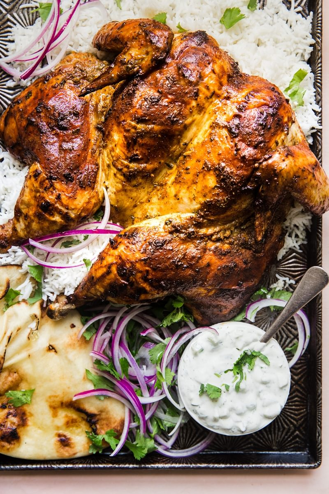

Roasted Tandoori Chicken

Ingredients
- 1/2 cup Curd
- 3 tbsp lemon juice
- 1 tbsp ginger, grated or minced
- 4 cloves garlic, minced
- 1 tsp ground turmeric
- 1 tbsp chili powder
- 1 tsp cayenne powder
- 1/2 tsp ground cinnamon
- 2 tsp ground cumin
- 1/4 cup minced cilantro
- 1 tbsp salt (adjust to your liking)
- 1/2 tsp black pepper
- 1 (3.5-5 lb) whole chicken, spatchcocked (cavity parts discarded)
Directions
- Preheat oven to 375°F.
- In a medium sized bowl combine yogurt, lemon juice, ginger, garlic along with all herbs and spices. Mix well and coat chicken entirely in yogurt mixture.
- Arrange chicken on a baking sheet that is lined with a cooling rack (for extra crispy skin, no worries if you don’t own one).
- Bake chicken on center rack for 15 minutes per lb, about 1 hour 25 minutes or until internal temp of the chicken reads 165°F.
- Serve the chicken with fresh cilantro, basmati rice and our favorite recipe for raita.
To See 1nd recipe click Here!!
To See 3rd recipe click Here!!